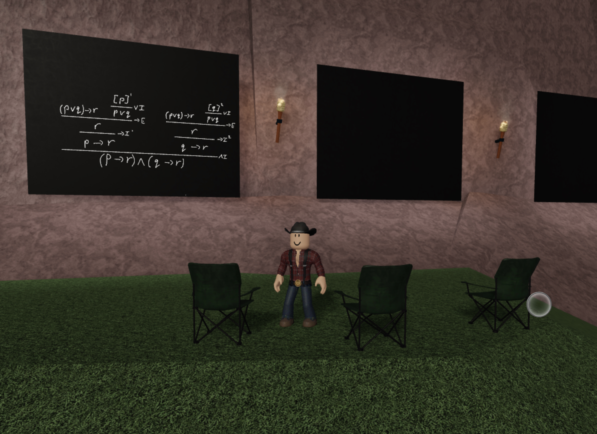

Billy Snikkers
Master’s student in mathematics at Utrecht University (Logic Track), and chief software engineer/co-founder of metauni. I’m interested in productive high-level abstractions that allow you to keep your feet on the ground, both in programming and proofs.
Projects
- metaboard: Shared virtual blackboards in Roblox. I am the primary author and maintainer. These are the key instrument for delivering seminars in Roblox. Embedding information in a persistent, virtual space with metaboards is a powerful framework for collaboration and research, not possible with other shared whiteboards tools.

- metauniOS: monorepo for the modules that make up metauni. I designed the overall structure and module loading, and have made major contributions to the Orbcam, AdminCommands and Drone systems.
- Feather: A featherweight declarative instance manager for Roblox. Made to dramatically increase the memory efficiency of metaboard.

- Replay: Multi-channel recordings of speaker audio, writing on metaboards, and motion capture of a VR character. WIP, but some code can be found here
Foundations
I organise and host the Foundations seminar with Will Troiani on the nature of mathematical objects, logic and Gödel’s theorems at metauni.

Research
- Verified Fairness in Machine Learning
- Supervised by Toby Murray, Ben Rubenstein, and Olya Ohrimenko
- Formalising an Intuitionistic Type Theory in Lean.
- Supervised by Daniel Murfet and Toby Murray.
github- paper
- Visualisation of R-Cuts in Embedded Planar Graphs.
- Supervised by Charl Ras
- FreeMagma: A Library of Universal Catalan Bijections
- Supervised by Richard Brak.
- Poster
github
- Algorithms for the GER Representation of Pos.
- Supervised by Harald Søndergaard and Peter Schachte
- paper
github